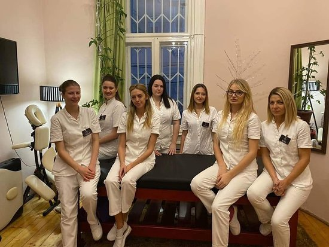

Ova ustanova je osnovana 1924. godine u privatnoj kući u ulici Kneza Miloša u 4 prostorije u kojima su bile smeštene; dečja ambulanta, laboratorija i biblioteka. Ležećih bolesnika nije bilo, a predavanja za studente održavana su u amfiteatrima drugih institucija. Kliniku je osnovao dr Franc Grejer, poljski lekar iz Lavova, jedan od istaknutih saradnika bečke pedijatrijske škole profesora dr Pirketa koji je kasnije bio i prvi šef katedre i rukovodilac nastave pedijatrije.
Godine 1928. godine Klinika je na Guberevcu dobila zgradu "od drveta i hartije", što je pre svega imao biti zavod za zaštitu matera i dece. U toj novoizgrađenoj drvenoj baraci, pored ambulante i tri lekarske sobe za pregled i rendgenom, klinika je raspolagala i sa tri sobe sa 25 kreveta za ležeće bolesnike, kao i učionicom za nastavu. U ambulantnim prostorijama, bio je smešten i prvi Dečji dispanzer u Beogradu, čiji je šef bila dr Smilja Kostić-Joksić. Godine 1930. godine, Klinici je bio priključen i Dom materinskog udruženja, izgrađen u ulici Vojvode Milenka, čiji je prvi rukovodilac bio docent dr Uroš Ružičić.

Petar Petrovic
Petar Petrovic

Petar Petrovic